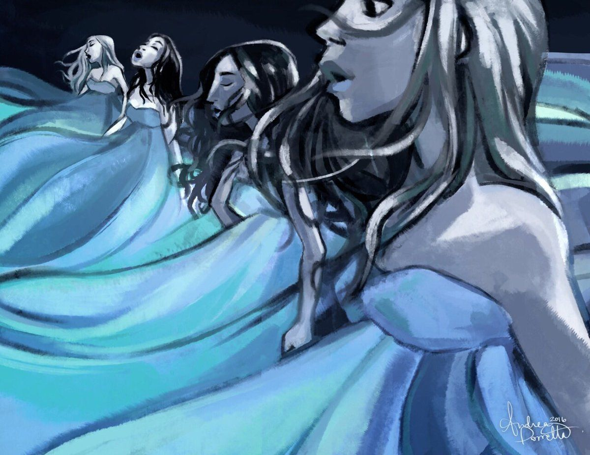
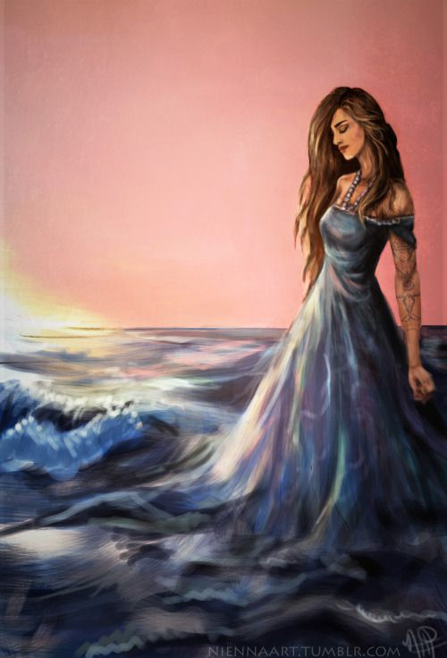
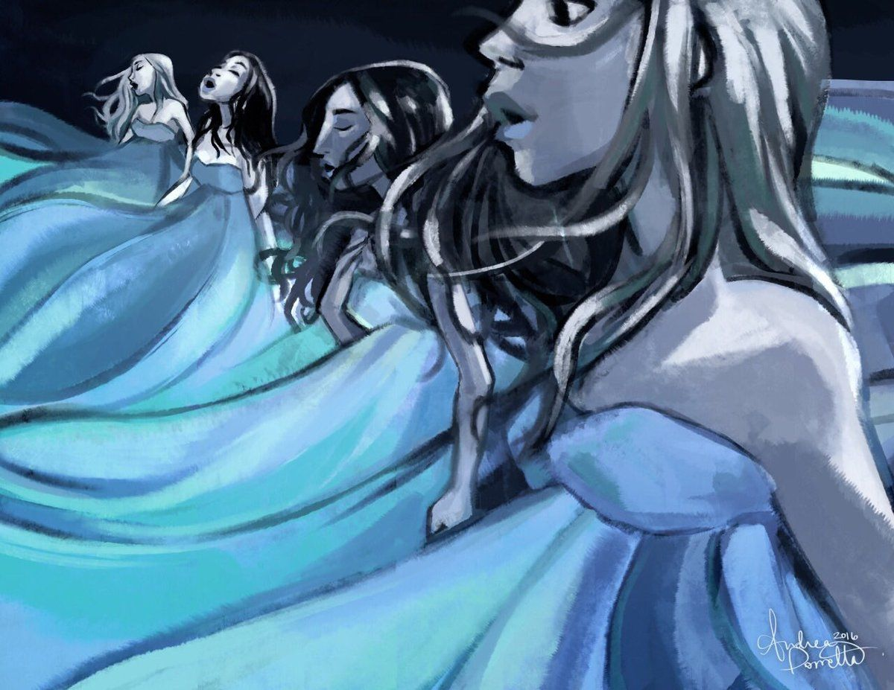
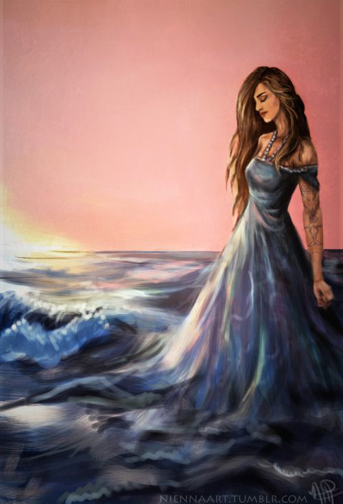

| Autor | Kiera Cass | >
| Nakladatelství | CooBoo |
| Žánr | YA, fantasy, romantika |
| Počet stran | 304 |
| Originální název | The Siren |
| Autor obálky | Gustavo Marx |
Abych byla upřímná, moc jsem toho od knihy neočekávala. Protože o Sirénách je příběhů tucty a já na romantiku moc nejsem (ne, fakt mě nebaví celou knížku řešit: ó můj božee, můj kluk šel na rande s jinou, apod. ) Ale musím říct, za TAHLE knížka byla ohromná! Sice mi to celé přišlo trochu unreal ( úplně běžně se určitě stává, že se holka a kluk zamilují za jeden den, žejo) ale i taaak. Bavilo mě to! Pořád se tam něco dělo, osoby mi byly sympatické a oblíbila jsem si hodně Padmu a Oceán. Ten konec se vážně povedl... Brečela jsem A bylo to celé krásně vymyšlené! A řekla bych že se mi to možná líbilo i o trošičku víc než hit Selekce.
 


